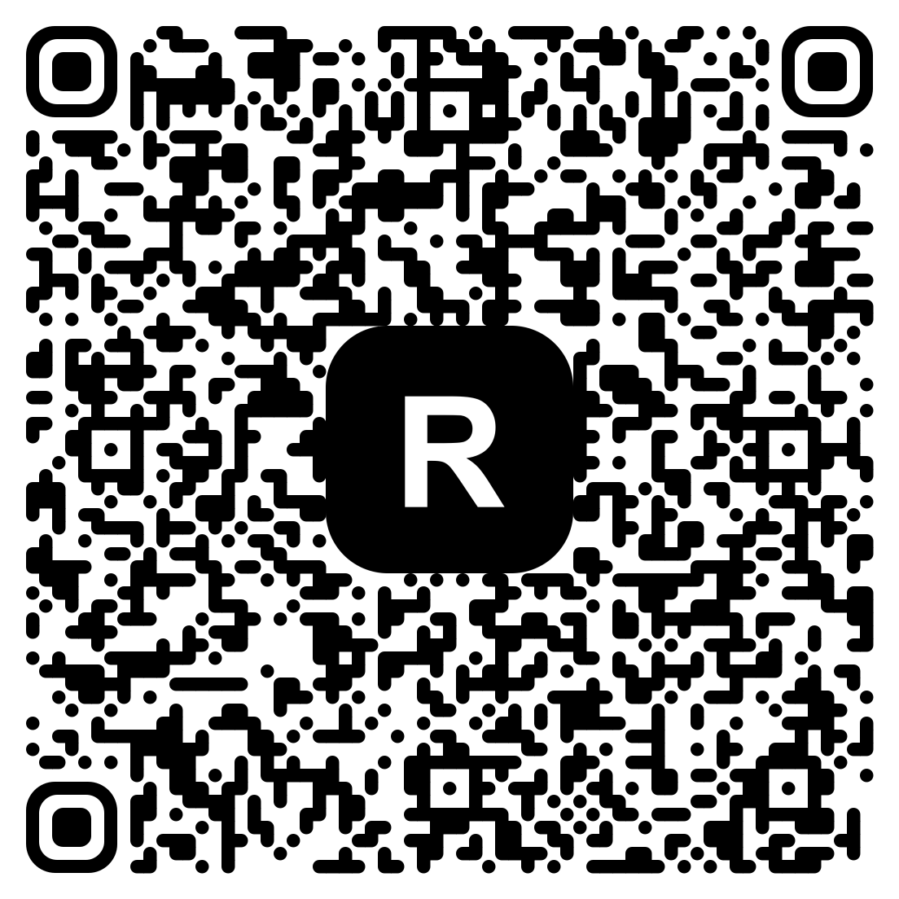

Допомогти Федерації
Ваша підтримка допомагає перетворювати ідеї на реальні заняття та нові можливості для дітей
Чому підтримка важлива
ГО «Федерація робототехніки та програмування Прилуччини» працює там, де сучасна технічна освіта часто недоступна: у школах громад, для дітей, молоді та дорослих, які хочуть навчатися, але не мають ресурсів.
На що йдуть кошти
Зробити внесок
Відскануйте QR-код у застосунку вашого банку або камерою телефона — і підтримайте Федерацію за кілька секунд.

Працює з будь-яким українським банком — Приват24, monobank та іншими.
Суму
ви вказуєте самостійно.
Як можна підтримати
Фінансова допомога
Одноразові або регулярні донати на освітню та волонтерську діяльність організації.
ПідтриматиПартнерство
Співпраця з бізнесом та фондами у форматі спільних освітніх проєктів та грантових програм.
КонтактиМатеріальна підтримка
Передача комп'ютерної техніки, електронних компонентів, 3D-принтерів.
Про ІТ-благодійністьВолонтерство
Допомога часом та експертизою: проведення занять, менторство, організаційна підтримка.
ДолучитисьЗв'язок для партнерів
Якщо ви представляєте бізнес, фонд або організацію і хочете обговорити партнерство — напишіть нам.
Напишіть нам на пошту
Розкажіть про вашу пропозицію листом — ми відповімо якнайшвидше. Натисніть, щоб скопіювати адресу: